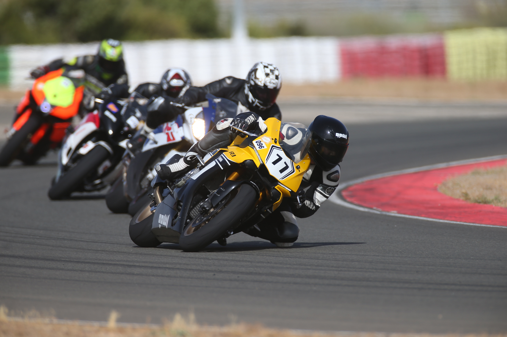

Esportivas
As motocicletas esportivas são para pessoas que têm sangue frio nas veias, e querem vê-lo pulsar na mesma intensidade
que a velocidade de suas máquinas, com toda a adrenalina possível, e não simplesmente sair por aí desfilando a 30 km/h.

Os materiais leves e os pneus largos, além dos motores megapotentes favorecem experiências incríveis, que só quem tem
amor ao esporte pode compreender. Ter uma motocicleta esportiva é dar-se a oportunidade de sentir a adrenalina libertadora,
com estabilidade e segurança até na maior das velocidades. Trata-se de uma experiência sem igual, recomendável apenas para
quem sabe o que é dominar o mundo em duas rodas.